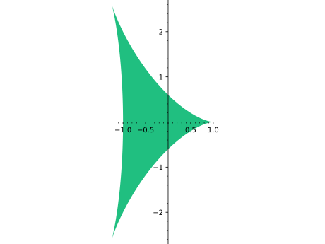

Return either a 2-dimensional or 3-dimensional polygon depending
on value of points.
For information regarding additional arguments, see either
polygon2d() or polygon3d().
Options may be found and set using the dictionaries polygon2d.options
and polygon3d.options.
EXAMPLES:
sage: polygon([(0,0),(1,1),(0,1)])Graphics object consisting of 1 graphics primitive
Extra options will get passed on to show(), as long as they are valid:
sage: polygon([(0,0),(1,1),(0,1)],axes=False)Graphics object consisting of 1 graphics primitivesage: polygon([(0,0),(1,1),(0,1)]).show(axes=False)# These are equivalent
Type polygon2d.options for a dictionary of the default
options for polygons. You can change this to change the
defaults for all future polygons. Use polygon2d.reset()
to reset to the default options.
EXAMPLES:
We create a purple-ish polygon:
sage: polygon2d([[1,2],[5,6],[5,0]],rgbcolor=(1,0,1))Graphics object consisting of 1 graphics primitive
By default, polygons are filled in, but we can make them
without a fill as well:
sage: polygon2d([[1,2],[5,6],[5,0]],fill=False)Graphics object consisting of 1 graphics primitive
In either case, the thickness of the border can be controlled:
sage: polygon2d([[1,2],[5,6],[5,0]],fill=False,thickness=4,color='orange')Graphics object consisting of 1 graphics primitive
For filled polygons, one can use different colors for the border
and the interior as follows:
sage: L=[[0,0]]+[[i/100,1.1+cos(i/20)]foriinrange(100)]+[[1,0]]sage: polygon2d(L,color="limegreen",edgecolor="black",axes=False)Graphics object consisting of 1 graphics primitive
Some modern art – a random polygon, with legend:
sage: v=[(randrange(-5,5),randrange(-5,5))for_inrange(10)]sage: polygon2d(v,legend_label='some form')Graphics object consisting of 1 graphics primitive
A purple hexagon:
sage: L=[[cos(pi*i/3),sin(pi*i/3)]foriinrange(6)]sage: polygon2d(L,rgbcolor=(1,0,1))Graphics object consisting of 1 graphics primitive
A green deltoid:
sage: L=[[-1+cos(pi*i/100)*(1+cos(pi*i/100)),2*sin(pi*i/100)*(1-cos(pi*i/100))]foriinrange(200)]sage: polygon2d(L,rgbcolor=(1/8,3/4,1/2))Graphics object consisting of 1 graphics primitive
A blue hypotrochoid:
sage: L=[[6*cos(pi*i/100)+5*cos((6/2)*pi*i/100),6*sin(pi*i/100)-5*sin((6/2)*pi*i/100)]foriinrange(200)]sage: polygon2d(L,rgbcolor=(1/8,1/4,1/2))Graphics object consisting of 1 graphics primitive

Another one:
sage: n=4;h=5;b=2sage: L=[[n*cos(pi*i/100)+h*cos((n/b)*pi*i/100),n*sin(pi*i/100)-h*sin((n/b)*pi*i/100)]foriinrange(200)]sage: polygon2d(L,rgbcolor=(1/8,1/4,3/4))Graphics object consisting of 1 graphics primitive
A purple epicycloid:
sage: m=9;b=1sage: L=[[m*cos(pi*i/100)+b*cos((m/b)*pi*i/100),m*sin(pi*i/100)-b*sin((m/b)*pi*i/100)]foriinrange(200)]sage: polygon2d(L,rgbcolor=(7/8,1/4,3/4))Graphics object consisting of 1 graphics primitive
A brown astroid:
sage: L=[[cos(pi*i/100)^3,sin(pi*i/100)^3]foriinrange(200)]sage: polygon2d(L,rgbcolor=(3/4,1/4,1/4))Graphics object consisting of 1 graphics primitive
And, my favorite, a greenish blob:
sage: L=[[cos(pi*i/100)*(1+cos(pi*i/50)),sin(pi*i/100)*(1+sin(pi*i/50))]foriinrange(200)]sage: polygon2d(L,rgbcolor=(1/8,3/4,1/2))Graphics object consisting of 1 graphics primitive
This one is for my wife:
sage: L=[[sin(pi*i/100)+sin(pi*i/50),-(1+cos(pi*i/100)+cos(pi*i/50))]foriinrange(-100,100)]sage: polygon2d(L,rgbcolor=(1,1/4,1/2))Graphics object consisting of 1 graphics primitive
One can do the same one with a colored legend label:
sage: polygon2d(L,color='red',legend_label='For you!',legend_color='red')Graphics object consisting of 1 graphics primitive